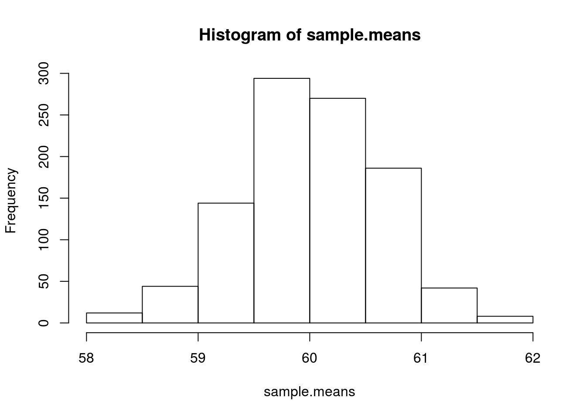

Chapter 5 Descriptive Statistics
5.1 Normality
- A normal distribution is an arrangement of a data set in which most values cluster in the middle of the range
- A graphical representation of a normal distribution is sometimes called a bell curve because of its shape.
- Many procedures in statistics are based on this property. Parametric procedures require the normality property.
- In a normal distribution about 95% of the probability lies within 2 Standard Deviations of the mean.
- Two examples: one population with mean 60 and the standard deviation of 1, and the other with mean 60 and sd=4 (means shifted to 0)
main.title <- "Area within 2 SD of the mean"
par(mfrow=c(1,2))
plot(function(x) dnorm(x, mean = 0, sd = 1),
xlim = c(-3, 3), main = "SD 1", xlab = "x",
ylab = "", cex = 2)
segments(-2, 0, -2, 0.4)
segments(2, 0, 2, 0.4)
plot(function(x) dnorm(x, mean = 0, sd = 4),
xlim = c(-12, 12), main = "SD 4", xlab = "x",
ylab = "", cex = 2)
segments(-8, 0, -8, 0.1)
segments(8, 0, 8, 0.1)
- if we sample from this population we get “another population”.fig.cap=“Simple plot”
sample.means <- rep(NA, 1000)
for (i in 1:1000) {
sample.40 <- rnorm(40, mean = 60, sd = 4) #rnorm generates random numbers from normal distribution
sample.means[i] <- mean(sample.40)
}
means40 <- mean(sample.means)
sd40 <- sd(sample.means)
means40## [1] 59.96273sd40## [1] 0.6307435- These sample means are another “population”. The sampling distribution of the sample mean is normally distributed meaning that the “mean of a representative sample provides an estimate of the unknown population mean”. This is shown in Figure 5.1
hist(sample.means)

Figure 5.1: Sample means histogram
5.2 Getting the Data. Descriptive statistics.
- Set the path to your files
- Read the Telecom1 dataset and print out the summary statistics with the command summary
options(digits=3)
telecom1 <- read.table("./datasets/effortEstimation/Telecom1.csv", sep=",",header=TRUE, stringsAsFactors=FALSE, dec = ".") #read data
summary(telecom1)## size effort EstTotal
## Min. : 3.0 Min. : 24 Min. : 30
## 1st Qu.: 37.2 1st Qu.: 119 1st Qu.:142
## Median : 68.5 Median : 222 Median :289
## Mean :100.3 Mean : 284 Mean :320
## 3rd Qu.:164.0 3rd Qu.: 352 3rd Qu.:472
## Max. :284.0 Max. :1116 Max. :777- We see that this dataset has three variables (or parameters) and few data points (18)
- size: the independent variable
- effort: the dependent variable
- EstTotal: the estimates coming from an estimation method
- Basic Plots
par(mfrow=c(1,2)) #n figures per row
size_telecom1 <- telecom1$size
effort_telecom1 <- telecom1$effort
hist(size_telecom1, col="blue", xlab='size', ylab = 'Probability', main = 'Histogram of project Size')
lines(density(size_telecom1, na.rm = T, from = 0, to = max(size_telecom1)))
plot(density(size_telecom1))
hist(effort_telecom1, col="blue")
plot(density(effort_telecom1))
boxplot(size_telecom1)
boxplot(effort_telecom1)
# violin plots for those two variables
library(vioplot)
vioplot(size_telecom1, names = '')
title("Violin Plot of Project Size")
vioplot(effort_telecom1, names = '')
title("Violin Plot of Project Effort")
par(mfrow=c(1,1))
qqnorm(size_telecom1, main="Q-Q Plot of 'size'")
qqline(size_telecom1, col=2, lwd=2, lty=2) #draws a line through the first and third quartiles
qqnorm(effort_telecom1, main="Q-Q Plot of 'effort'")
qqline(effort_telecom1) - We observe the non-normality of the data.
- We observe the non-normality of the data.
- We may look the posible relationship between size and effort with a scatterplot
plot(size_telecom1, effort_telecom1)
5.3 China dataset
library(foreign)
china <- read.arff("./datasets/effortEstimation/china.arff")
china_size <- china$AFP
summary(china_size)## Min. 1st Qu. Median Mean 3rd Qu. Max.
## 9 100 215 487 438 17500china_effort <- china$Effort
summary(china_effort)## Min. 1st Qu. Median Mean 3rd Qu. Max.
## 26 704 1830 3920 3830 54600par(mfrow=c(1,2))
hist(china_size, col="blue", xlab="Adjusted Function Points", main="Distribution of AFP")
hist(china_effort, col="blue",xlab="Effort", main="Distribution of Effort")
boxplot(china_size)
boxplot(china_effort)
qqnorm(china_size)
qqline(china_size)
qqnorm(china_effort)
qqline(china_effort) - We observe the non-normality of the data.
- We observe the non-normality of the data.
5.4 Normality. Galton data
- It is the data based on the famous 1885 Francis Galton’s study about the relationship between the heights of adult children and the heights of their parents.

5.5 Normalization
- China dataset. Take logs in both independent variables.


- If the log-log transformation is used the estimation equation is:
\[y= e^{b_0 + b_1 log(x)} \]
5.6 Correlation. China dataset.
- Correlation is a statistical relationship between two sets of data.
- With the whole dataset we may check for the linear Correlation of the variables we are interested in.
par(mfrow=c(1,1))
plot(china_size,china_effort)
cor(china_size,china_effort)## [1] 0.685cor.test(china_size,china_effort)##
## Pearson's product-moment correlation
##
## data: china_size and china_effort
## t = 20, df = 500, p-value <2e-16
## alternative hypothesis: true correlation is not equal to 0
## 95 percent confidence interval:
## 0.635 0.729
## sample estimates:
## cor
## 0.685cor(china_size,china_effort, method="spearman")## [1] 0.649cor(china_size,china_effort, method="kendall")## [1] 0.4685.7 Confidence Intervals. Bootstrap
- Until now we have generated point estimates
- A confidence interval (CI) is an interval estimate of a population parameter. The parameter can be the mean, the median or other. The frequentist CI is an observed interval that is different from sample to sample. It frequently includes the value of the unobservable parameter of interes if the experiment is repeated. The confidence level is the value that measures the frequency that the constructed intervals contain the true value of the parameter.
- The construction of a confidence interval with an exact value of confidence level for a distribution requires some statistical properties. Usually, normality is one of the properties required for computing confidence intervals.
- Not all confidence intervals contain the true value of the parameter.
- Simulation of confidence intervals
set.seed(10)
norsim(sims = 100, n = 36, mu = 100, sigma = 18, conf.level = 0.95)
- The range defined by the confidence interval will vary with each sample, because the sample size will vary each time and the standard deviation will vary too.
- 95% confidence interval: it is the probability that the hypothetical confidence intervals (that would be computed from the hypothetical repeated samples) will contain the population mean.
- the particular interval that we compute on one sample does not mean that the population mean lies within that interval with a probability of 95%.
- recommended reading: Robust misinterpretation of confidence intervals, Rink Hoekstra, Richard D. Morey, Jeffrey N. Rouder, Eric-Jan Wagenmakers. Psychonomic Bulletin & Review, October 2014
5.8 Nonparametric Bootstrap
- For computing CIs the important thing is to know the assumptions that are made to “know” the distribution of the statistic.
- There is a way to compute confidence intervals without meeting the requirements of parametric methods.
- Resampling or bootstraping is a method to calculate estimates of a parameter taking samples from the original data and using those resamples to calculate statistics. Using the resamples usually gives more accurate results than using the original single sample to calculate an estimate of a parameter.
 - An example of bootstrap CI can be found in the section “Evaluation in Software Engineering”
- An example of bootstrap CI can be found in the section “Evaluation in Software Engineering”